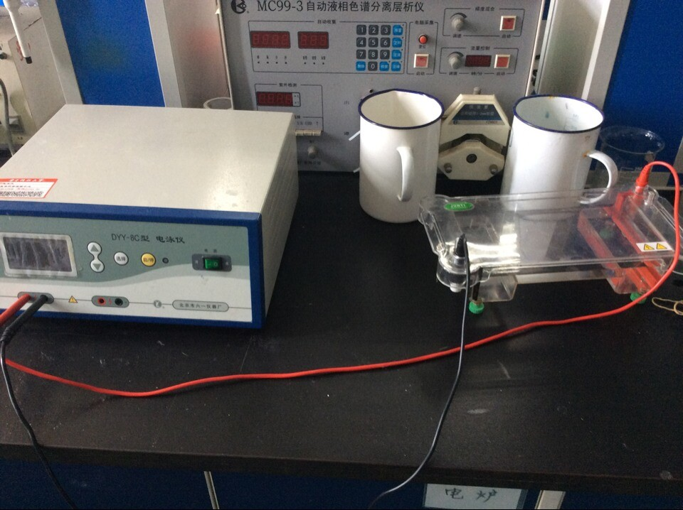
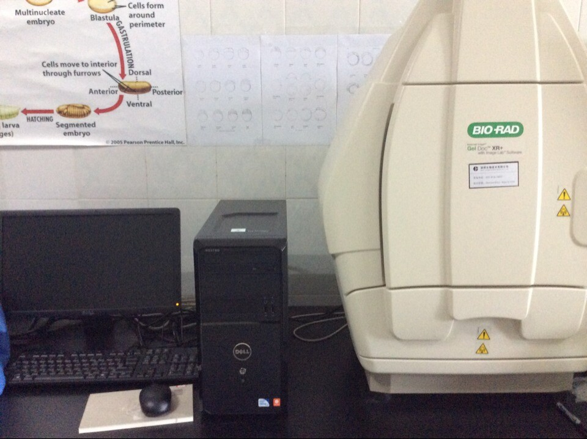
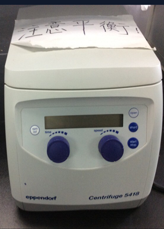
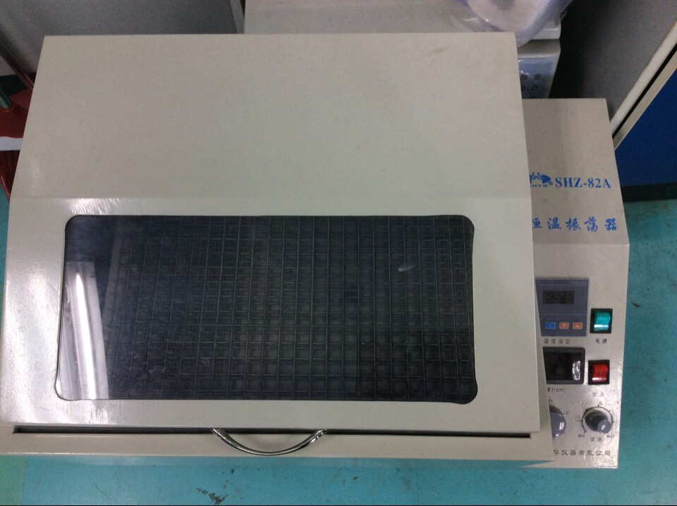
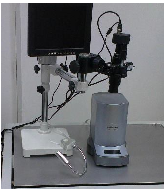
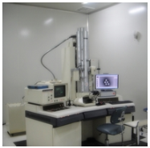
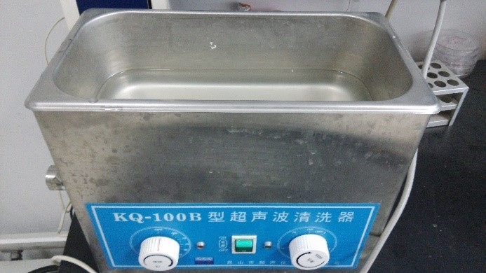
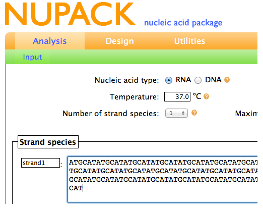
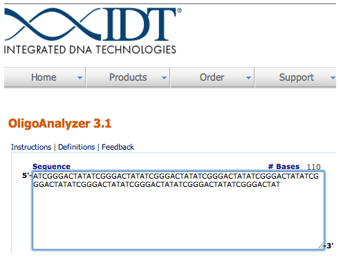
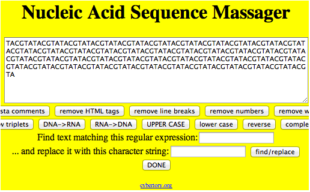

-
HOME
PROJECT
MATERIALS&METHOD
RESULT
FUTURE
TEAM
The thermal cycler is a machine which we used to anneal our SST strands to form structures. It works by cycling tubes through predetermined temperatures and times.
Agarose Gel Electrophoresis is a method which we used in order to view our DNA SST structures separated by size. The agarose gel contains wells along the top in which one can place DNA samples. An electrical current pulls the negatively-charged DNA through the agarose gel. Smaller structures travel through the gel faster than larger structures.
Help to view the result of electrophoresis, it works by scanning the gel with UV light and recording the resulting emissions. Areas containing DNA show up as light bands on the resulting image.
Centrifuge
To purify the gold nanoparticle and magnetic nanoparticle,we have to use ultrafiltration device,so a centrifuge is a must. Besides,when we extract M13 ssDNA,a centrifuge of high quality is very practical
Incubation shaker
To purify the gold nanoparticle and magnetic nanoparticle,we have to use ultrafiltration device,so a centrifuge is a must. Besides,when we extract M13 ssDNA,a centrifuge of high quality is very practical
Nucleic acid analyzer
To view the resulting DNA SST structures, we used Atomic Force Microscopy (AFM). This machine works by oscillating a very small tip over a surface. As a result, the tip is able to "feel" any perturbations on the surface on the scale of nanometers. In this case, DNA SST structures were detected as perturbations visible on a computer screen.
Transmission Electron Microscopy (TEM)
A microscopy technique in which a beam of electrons is transmitted through an ultra-thin specimen, interacting with the specimen as it passes through. An image is formed from the interaction of the electrons transmitted through the specimen; the image is magnified and focused onto an imaging device, such as a fluorescent screen, on a layer of photographic film, or to be detected by a sensor such as a CCD camera.
Sonic Washer
Ultrasonic Cleaner has two function, one is to clean the glassware, especially when you synthesize colloidal. Besides, when you purify the modified MP, you may find it easy to coagulation. So you have to ultrasonic concussion them before centrifuging again, or you would find all the MP had precipitated on the membrane.
Laser sphere analyzer
Laser sphere analyzer is a useful tool to measure the hydrate size and zeta potential. Compare the hydrate size and zeta potential ,you can make sure if the nano spheres have linked with streptavidin or DNA. Normally, if nano spheres conjugated with streptavidin or DNA, the hydrate size and zeta potential will get larger.
caDNAno is 3D design tool for DNA origami. We used it for designing our origami structures.
NUPACK
NUPACK is an online tool that we used for computing the temperature at which our SST structures would melt.
Oligo Analyzer
Oligo Analyzer is an online tool that we used for determining if any of our SST structures would bind complementary to themselves.
Sequence Massager
Sequence Massager is an online tool that we used for reversing or finding the complement strands for our SST sequences
We use the ClustalW2 _ EMBL-EBI, a sequence alignment program with a Multiple Sequence Alignment (MSA) function, to test the possibility of staple strands combination and homologies.